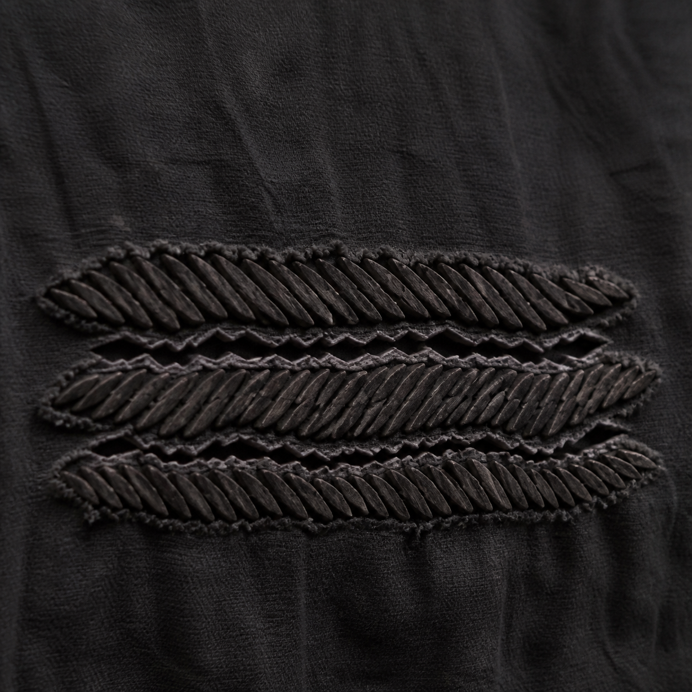
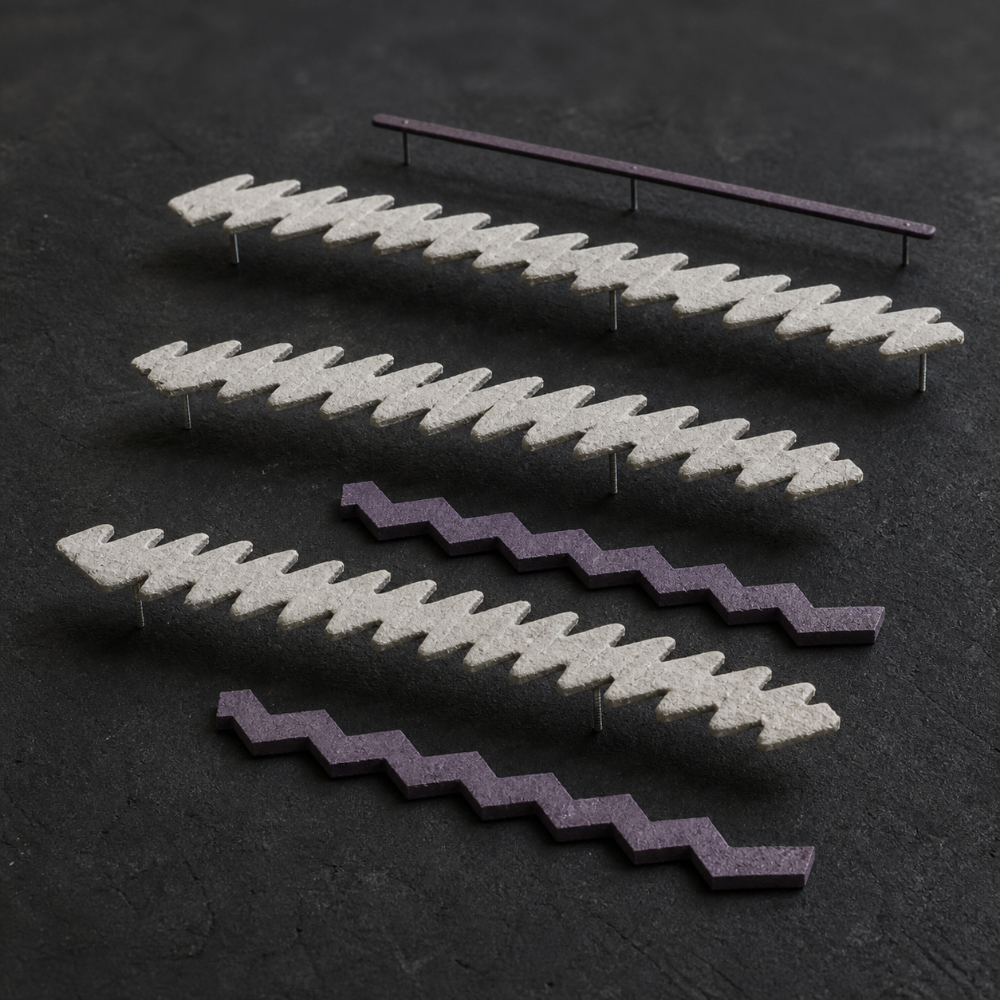
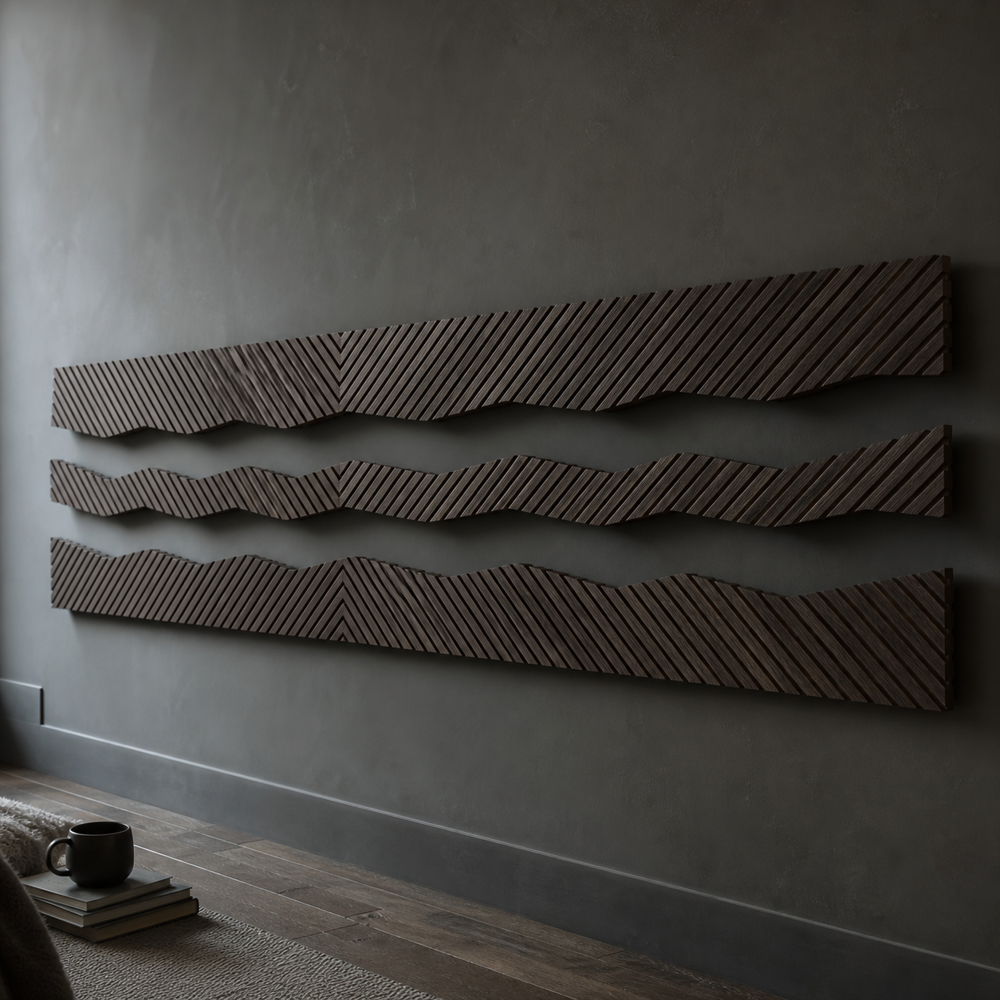
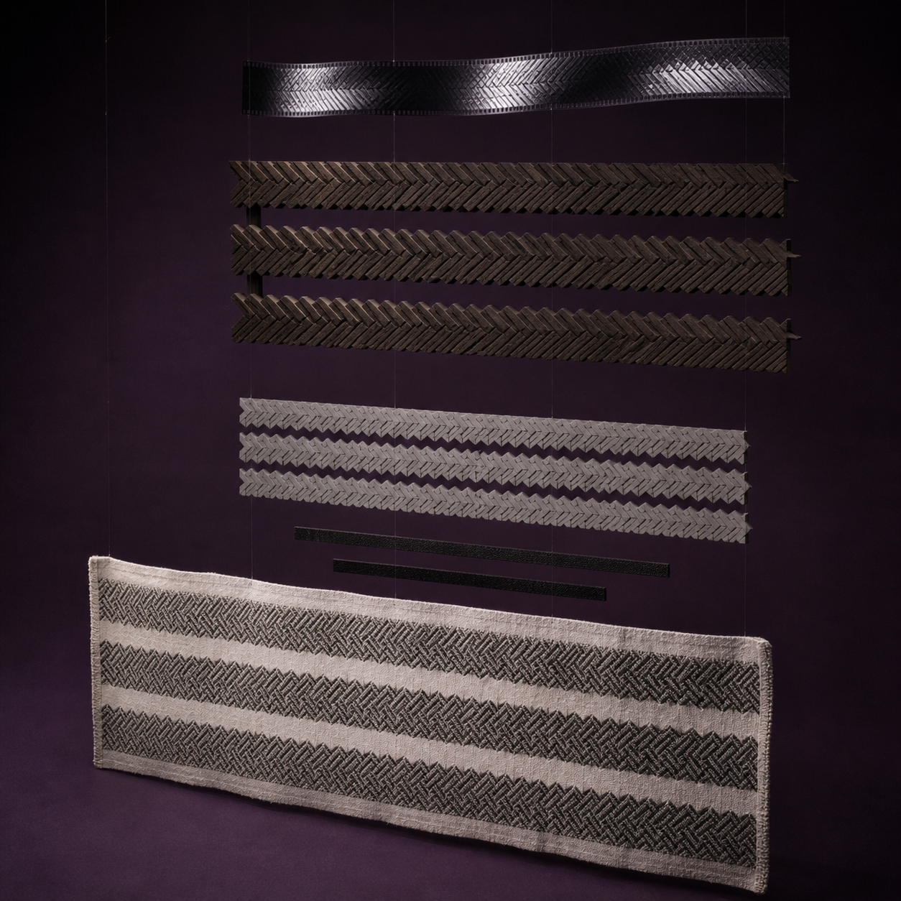

一张已经完成、来源与权利边界清楚的单色织物压印里，三条深墨色密纹横向延伸，两道未着色的锯齿空带穿在其间。纸面上先被读到的不是某个图案，而是“密—空—密—空—密”的触感节奏。
元维构把三条密纹分别描成连续带状区域，再记录两道空带的转折、宽度和贯通方向。密纹中的细小短线可以归并，空带却不能被支架截断；它们决定视线能否从左端一直穿到右端。
中间模型使用三块可拆的浅灰梳齿板表示密纹，用两条完整抽出的深色占位条检查留白。占位条取下后，模型中必须留下两道从一侧贯穿到另一侧的空气通道，同时能从斜侧面看见三块板的高低层距。
关系稳定后，方向样本可由烟熏白蜡木梳齿、墨紫氧化金属背脊和细窄悬挂件组成。正面仍读成三条密纹与两道留白，侧面则出现不同深度的齿列；它是一件壁挂结构样本，不是织布机、暖气片、百叶窗或建筑格栅。
原作压印、密度分区草图、可拆梳齿灰模、实体的正侧观察和一道掠光触感记录，可以进入同一份数字档案。本文与配图均为方向示意，不对应真实作者、客户、订单、展览、授权或已经完成的项目。